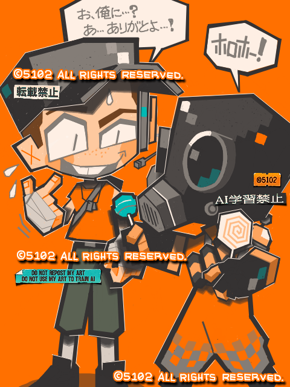

スカウトとパイロ（TF2）

手書きブログ。Teamfortress2の絵を描くのは久しぶり。手書きブログに古のユーザーが残したTF2のタグがあるのマジで嬉しすぎる。
パイロゴーグルを着けてない人にはキャンディーじゃなくて人間の一部とか臓器に見えてるはずなので、ちゃんとお礼言うスカウトってちょっと良い子に描きすぎたかもしれない…。多分悲鳴上げて逃げ出すはず。
2025/12/27
 スカウトとパイロ（TF2）
スカウトとパイロ（TF2）